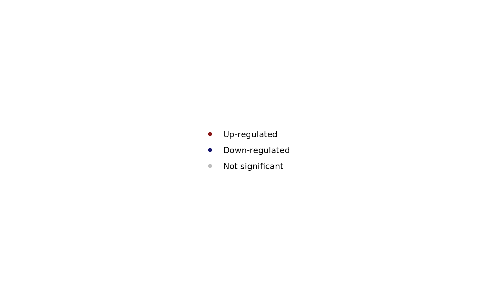
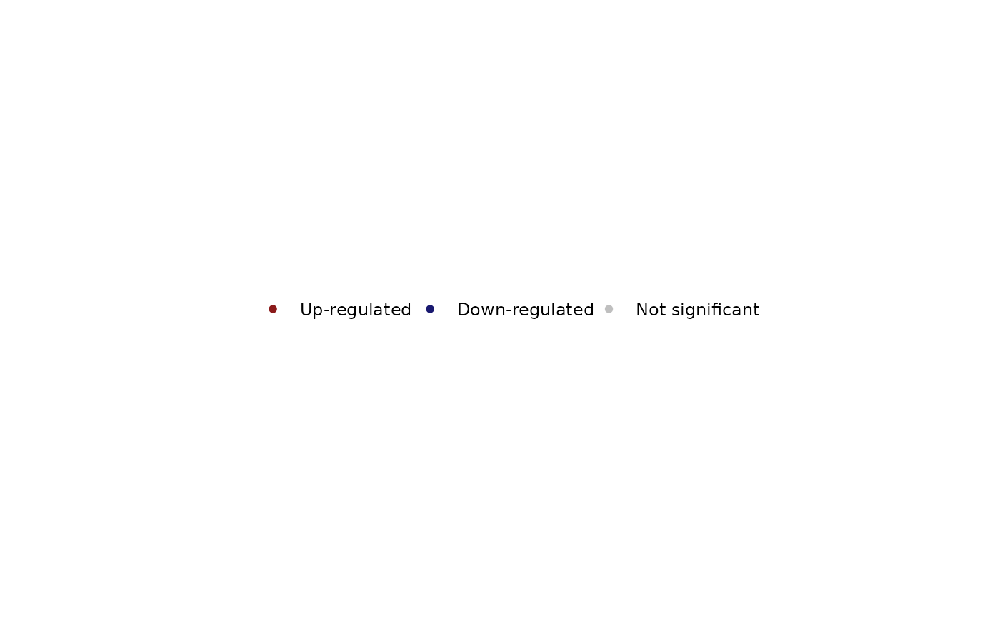

Takes the legend out of a ggplot, to save it as its own file
with save_plot or place it in a layout. By default
the legend is exactly as drawn in the plot; the arguments
change it when needed.
Usage
extract_legend(plot, direction = NULL, title.position = NULL, ...)
# S3 method for class 'bt_legend'
print(x, ...)Arguments
- plot
A ggplot
- direction
Direction of the legend: NULL (default) keeps the plot's; "horizontal" lays the keys out in a row, "vertical" in a column. Several legends (e.g. colour and size) are placed side by side or stacked accordingly
- title.position
Position of the legend title: NULL (default) keeps the plot's; or one of "top", "bottom", "left" and "right"
- ...
Other theme settings applied to the legend before it is taken out, e.g. `legend.text = element_text(size = 8)`, `legend.key.spacing.x = unit(4, "pt")` or `legend.box = "vertical"`
- x
A legend from `extract_legend()`
Details
A plot whose legend is hidden (`legend.position = "none"`, as in
plot_volcano with `annotate.counts = "arrow"`) still gives its
legend, drawn as it would be on the right. Legends of patchworks are not
supported; extract them from the individual plots.
The legend saved by save_plot is re-built on the kind of device
it is written with, so its text fits whatever the file format. A small
margin (the theme's small text size, 9 pt) is kept around it, so that the end
labels of colour bars, which overhang the legend box, are not cut.
In a patchwork the legend has no fixed size: give `width` and `height` to
save_plot, or save the plot (without its legend,
`plot + theme(legend.position = "none")`) and the legend separately.
Examples
set.seed(1)
de <- data.frame(
logFC = rnorm(500, sd = 1.5),
PValue = runif(500)^4,
row.names = paste0("Gene", 1:500)
)
de$FDR <- p.adjust(de$PValue, "BH")
p <- plot_volcano(de, method = "edgeR", label = "none")
leg <- extract_legend(p)
leg

extract_legend(p, direction = "horizontal")

if (FALSE) { # \dontrun{
save_plot(p + ggplot2::theme(legend.position = "none"), "volcano.pdf")
save_plot(leg, "volcano_legend.pdf")
} # }